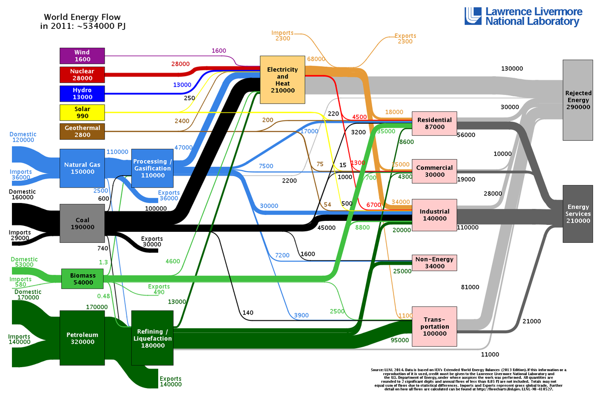
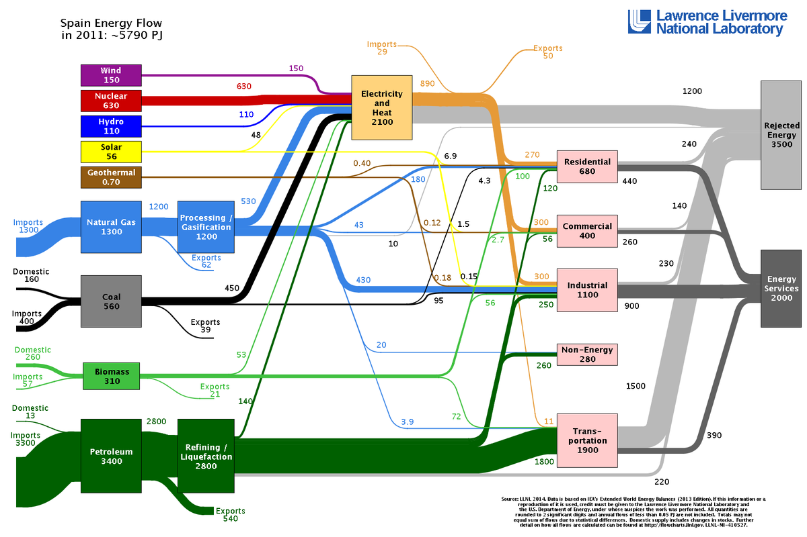
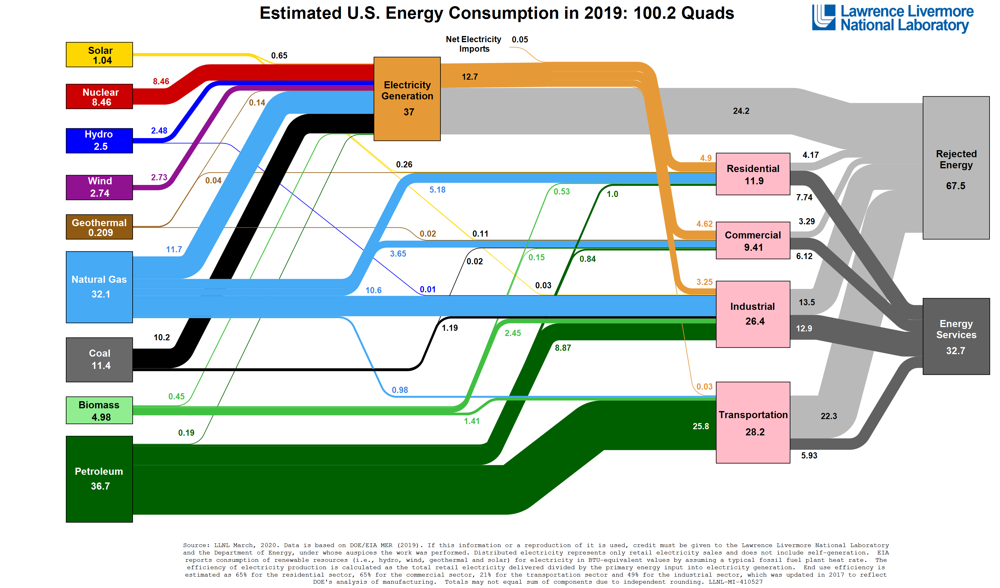

Producció d’energia elèctrica#
Pàgina en desenvolupament
Encara estem treballant en aquest document.
Esperem oferir-vos properament el seu contingut.
Disculpeu les molèsties.
Per ara podeu consultar el meu llibre en PDF Llibre CC Tecnologia Industrial I. Producció d’energia elèctrica
L’energia, una necessitat humana#
En Joan Vila, al seu formidable article El consum d’energia de la civilització [Vil13] fa una reflexió molt interessant:
Aquests dies he pogut llegir el llibre «La mesura de la civilització» de Ian Morris, que estudia els guanys que ha fet la civilització humana a través de l’observació del consum d’energia, de l’augment de població de les ciutats, de la potència de guerra i de la capacitat d’informació. De tots aquests paràmetres el més significatiu és l’estudi del consum d’energia, que indica exactament com l’evolució humana millora incorporant més consum energètic.
Tal vegada veurem millor les dades que cita a l’article si les representem gràficament:
import matplotlib.pyplot as plt
x = [-14000, -10000, -8000, -6000, -4000, -3000, -1000, 1, 900, 1500, 1600, 1700, 1800, 1900, 2000]
y = [ 4000, 5500, 6500, 8000, 11000, 12000, 17000, 31000, 25000, 27000, 29000, 32000, 38000, 92000, 230000]
fig, ax = plt.subplots()
ax.set_xlabel('any (era cristiana)')
ax.set_ylabel('Consum energètic (kcal)')
ax.set_title('Evolució del consum energètic')
ax.scatter(x, y)
plt.show()
Fixeu-vos en el creixement exponencial de la demanda d’energia.
Al mateix article es fa una relació directa entre el consum energètic i l’esperança de vida al llarg de la Història.
Show code cell source
import matplotlib.pyplot as plt
fig, ax = plt.subplots(figsize=(5, 2.7), layout='constrained')
edv = [30, 50, 80]
categories = ['prehistòria', 'preindustrial', 'moderna']
ax.bar(categories, edv)
ax.set_ylabel('Esperança de via (anys)')
ax.set_title('Evolució de l\'esperança de vida')
plt.show()
Un model sostenible?#
La població mundial creix ràpidament, els països en vies de desenvolupament demanden més energia amb la seva industrialització, els combustibles fòssils s’esgoten…
Si analitzem el flux mundial d’energia amb un diagrama de Sankey, on l’amplada de les fletxes son proporcionals al valor del flux, podem ràpidament treure’n algunes conclusions:

Les energies convencionals encara dominen el món. Els combustibles fòssils (gas natural, carbó i petroli) representen el gruix de l’energia consumida.
Aquest predomini de l’energia fòssil és absolut a la seva utilització pel transport, on el petroli representa el 95 % de l’energia consumida
Les pèrdues energètiques a nivell global són inacceptables. És perd molta més energia de la que s’aprofita, produint l’escalfament global del planeta.
A la conversió elèctrica es perd un 62 % de l’energia. Podem dir que per cada kWh d’electricitat que aconseguim escalfem el planeta en el doble d’aquesta quantitat.
Com veieu vivim un model energètic no sostenible. O el canviem o no ens en sortirem.
Tractant-se d’un diagrama mundial un pot pensar que la culpa és d’altres països. Veiem en detall diagrames per a Espanya i USA. En el darrer cas les xifres són més modernes, no per això millors, i sense esperança de canvi en els propers anys donada la política energètica de l’actual administració:
 
Cap a un mon sostenible: la necessària transició energètica#
Cal, per tant, una transició en el model energètic cap a un desenvolupament sostenible. Podem millorar molt en els següents camps:
Transició en el model de transport, desenvolupant vehicles elèctrics o que utilitzin biocombustibles, desplaçant el consum del petroli en aquest camp. El consum i turisme de proximitat, així com el teletreball, poden ser de gran ajut.
Millorar el rendiment de les centrals elèctriques, potenciant l’ús d’energies netes com ara la minihidràulica, l’eòlica i fotovoltaica i substituint les centrals tèrmiques convencionals per centrals de cogeneració que utilitzin combustibles renovables, com ara la biomassa. Tancament de les centrals nuclears. Evitar pèrdues en el transport de l’energia elèctrica.
Per garantir el subministrament elèctric i donada la variabilitat de les energies solars i eòlica, cal desenvolupar sistemes d’emmagatzemament d’energia, locals i a la xarxa, utilitzant bateries, centrals hidroelèctriques reversibles, depòsits d’hidrogen i, fins-i-tot, la construcció d’illes artificials generadores/emmagatzemadores d’energia.
Fer un millor ús de l’energia, amb habitatges i aparells més eficients i conscienciant als consumidors dels hàbits que afavoreixen un consum responsable. Recordem que l’energia més ecològica és aquella que no es consumeix.
En aquesta línia és molt recomanable el material didàctic Les energies renovables. L’alternativa al col·lapse de les energies fòssils